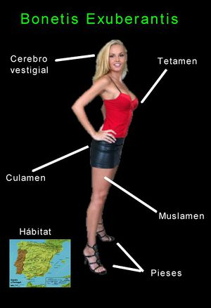

Arancha Bonete
 De: La Frikipedia, la enciclopedia extremadamente seria.
De: La Frikipedia, la enciclopedia extremadamente seria.
«Su fabuloso entreteto provoca rigideces inesperadas»
~ Buddy Ayen
 Esquema general de Arancha Bonete.
- Género y especie: Bonetis Exuberantis
- Volumen mamario: No abarcable en mano común
Los zoólogos han denominado Bonetis Exuberantis a este ejemplar nada común en la especie humana, es mas,los expertos debaten actualmente si sus diferencias genéticas con otras hembras humanas puedan ser suficientes como para que se considere una nueva "raza"
Muchos desearían que esta fuese una especie más común pero solo se ha encontrado un ejemplar,se ha llegado a proponer su clonación en masa por petición popular. Poco más se sabe de las costumbres de este esquivo ser.
Arancha Bonete en éxtasis recibiendo al Espíritu Santo.
Aficiones
Muchas y muy variadas son las aficiones de este ejemplar, casi siempre todas ellas relacionadas con actividades para las que se requiere un alto nivel cultural, un coeficiente intelectual superior al normal, se dice que se codea con personajes como Stephen Hawking.
Estas son sus aficiones mas conocidas:
- Mostrar su tetamen sin querer queriendo.
- No dejarse ver cerca de mi casa
Dichos Populares
La sabiduría popular ha dado lugar a dichos y refranes de lo más variopinto, y muchos de ellos han sido inspirados en la exuberante modelo, veamos algunos de ellos...
- Ay si voy con la de mear... ¡te la voy a meter hasta el CUELLO!
- Hace un calor que te torras.
- Estás más buena que la Bonete.
- Me gustas casi tanto como la Bonete.
- Te querría si la Bonete no existiese.
- Teta que mano no cubre no es teta si no ubre.
¿Sabias que...
- ...su índice de adorabilidad roza el 99 por ciento?
- ...Drowzee los Jedis y otros seres supremos copiaron su tecnica de hipnosis con menos efectividad?
- ...este artículo no es de Dorling Kindersley?
- ...los superguerreros usan su tinte capilar?
- ...usar publicaciones en las que ella aparezca provoca ceguera, acné juvenil, y deshidratación?
- ...no esta al alcance de cualquiera?
- ...miles de nerds se masturbaran mientras "leen" este artículo?
- ...su primer amor fue Mr. Corn?
- ...a estas alturas a los que estuviesen palpandose se les ha cortado el rollo?
- ...no ha perdido la virginidad y solo le metieron la puntita?
- ...estoy esperando a que alguien me de su teléfono?
- ...quiero que leas el artículo para que me lo hagas llegar?
- ...Terminatrix es una burda copia de la Bonete 1.0?
- ...Arancha Bonete es capaz de reventar un Furciometro con la mirada?
Autor(es):
- Krusher
- Nexo
- Doctor grijander
- Frikiman
- Bidroid
- Khazike Khashondo
- Romeo 62
- Zalteck
- ArreKarallo
Frikipedia 2005-2016, Licencia
GFDL 1.2 - Extraído por FrikiLeaks